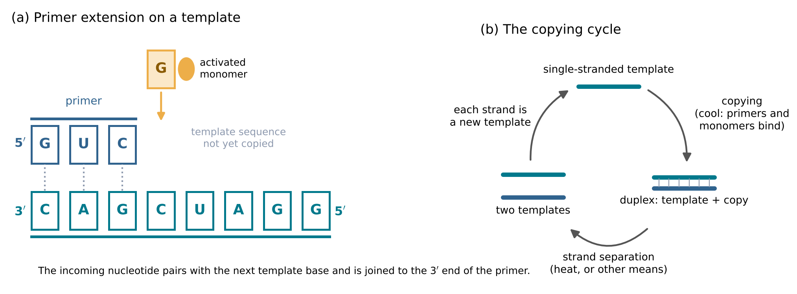
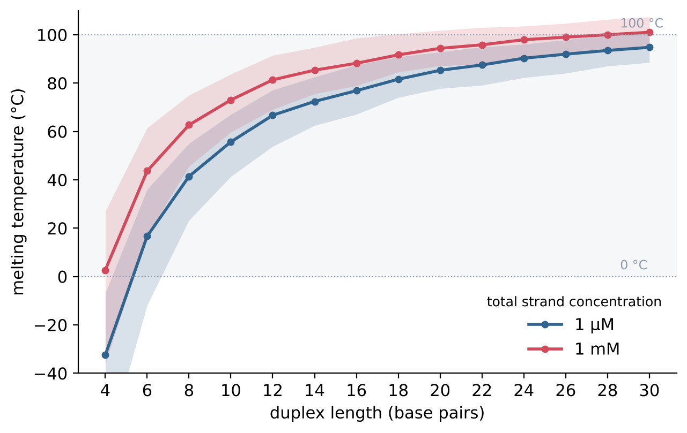
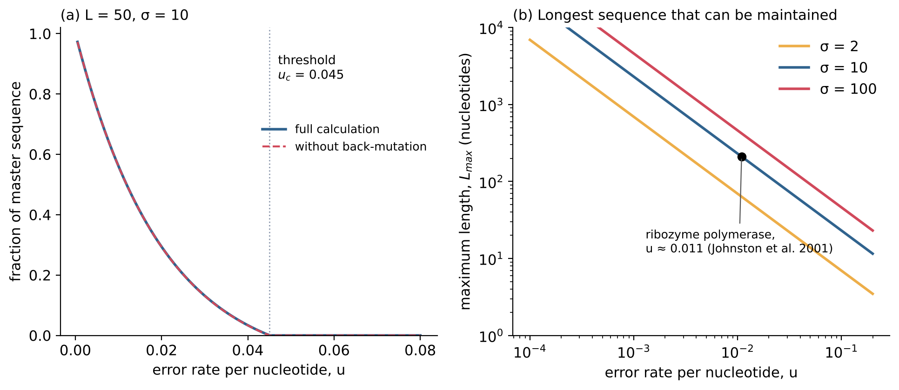

8 RNA Copying Itself
Learning objectives
After reading this chapter you should be able to:
- State the RNA world hypothesis and explain why template-directed copying is central to it.
- Describe non-enzymatic template-directed primer extension, the improvements made to it, and its present limits.
- Explain the strand-separation problem, and use the melting temperature of a duplex to show how it depends on length and concentration.
- Derive the error threshold of a replicating sequence and calculate the longest sequence that a given copying accuracy can maintain.
- Describe the main ribozyme polymerases made by in vitro evolution and what they can and cannot yet do.
- Explain how selection arises among replicating molecules, with reference to self-sustained replication of RNA enzymes.
- Compare measured copying rates with the rates that heredity requires, and list the main open questions.
8.1 Templating
The RNA world
In all known organisms, genetic information is stored in DNA, and most catalysis is carried out by proteins. Each of these two kinds of molecule is made with the help of the other. The discovery of ribozymes (Section 7.5) suggested a way out of this circularity. In Joyce’s words, “there are strong reasons to conclude that DNA- and protein-based life was preceded by a simpler life form based primarily on RNA. This earlier era is referred to as the ‘RNA world’, during which the genetic information resided in the sequence of RNA molecules and the phenotype derived from the catalytic properties of RNA” (Joyce 2002). The term was introduced by Gilbert in 1986 (Gilbert 1986). Orgel regarded the evidence as strong: “The demonstration that ribosomal peptide synthesis is a ribozyme-catalyzed reaction makes it almost certain that there was once an RNA World. The central problem for origin-of-life studies, therefore, is to understand how a protein-free RNA World became established on the primitive Earth” (Orgel 2004).
The RNA world hypothesis is the hypothesis that, at an early stage of life, RNA served both as the genetic material and as the main catalyst. That such a stage existed is a hypothesis with substantial support; how it arose from the chemistry of Chapters 4 to 7 is an open question. Its central requirement is that RNA sequences can be copied.
Copying by complementarity
The rules of base pairing (Section 7.1) provide a copying mechanism. A template is a strand whose sequence directs the order in which nucleotides are joined (Section 5.5). A short strand bound to the template, the primer, is extended at its 3\('\) end: a nucleotide that pairs with the next template base is held in position and joined to the primer (Figure 8.1 a). The product is the complement of the template, not an identical copy. A second round of copying, with the complement as template, restores the original sequence. Replication of a sequence therefore requires two rounds of template-directed synthesis, and between the rounds the product must be separated from its template (Figure 8.1 b).

8.2 Non-enzymatic primer extension
What has been achieved
Template-directed synthesis without enzymes was introduced in Section 6.2: activated nucleotides, such as phosphorimidazolides, join on a template in the order specified by base pairing.
Inoue and Orgel showed that templates containing mainly cytidine direct the synthesis of oligonucleotides from mixtures of activated mononucleotides. A nucleotide was incorporated into the products if and only if its complement was present in the template, the reaction had high fidelity, and the products had mean chain lengths of six to ten nucleotides (Inoue and Orgel 1983). The experiment established that sequence information can be transferred by base pairing alone, without enzymes, and that the transfer is selective.
The successful early experiments used templates rich in C, which direct the incorporation of G (Inoue and Orgel 1983). Templates containing A and U are copied far more slowly, by a factor of at least 1000 without helper oligonucleotides (Prywes et al. 2016; Wahiro 2026). Several improvements have been made since.
- Better leaving groups. Li and co-workers showed that “activating nucleotides with 2-aminoimidazole results in superior reaction kinetics and improved yields of primer extension reaction products”; among the leaving groups they compared, the rates differed by up to 200 times, with 2-aminoimidazole giving the fastest (Li et al. 2017).
- Activated helper oligonucleotides. Prywes and co-workers found that “short 5\('\)-activated oligonucleotides act as catalysts that accelerate primer extension, and allow for the one-pot copying of mixed sequence RNA templates”; with this method they synthesised a significant part of an active hammerhead ribozyme (Prywes et al. 2016).
Chemical self-replication has also been demonstrated with short synthetic templates: in 1986, von Kiedrowski reported a self-replicating hexadeoxynucleotide, a DNA chain of six nucleotides (Kiedrowski 1986).
Present limits
Three limits remain. First, copying is slow: under the most favourable conditions reported, adding one nucleotide takes from tens of minutes to about a day (Section 8.7). Second, an incorrect nucleotide slows further extension. Rajamani and co-workers found “that most mismatches decrease the rate of primer extension by more than 2 orders of magnitude relative to a matched (Watson-Crick) control” (Rajamani et al. 2010). This stalling reduces the number of complete copies that carry errors, but it also wastes time and template. Third, no non-enzymatic system has yet copied a sequence of useful length through repeated cycles of replication. The second round of copying requires the product to be separated from its template, which is the subject of the next section.
8.3 The strand-separation problem
Duplexes are too stable, primers too weak
For a duplex formed from two different strands, each present at total strand concentration CT/2, the melting temperature is the temperature at which half of the strands are paired. It depends on concentration:
\[ T_\mathrm{m} = \frac{\Delta H^\circ}{\Delta S^\circ + R \ln (C_\mathrm{T}/4)} \tag{8.1}\]
where ΔH° and ΔS° are the standard enthalpy and entropy of duplex formation (Section 7.2) and R is the molar gas constant. Because ΔS° is negative and ln(CT/4) is negative for concentrations below 4 mol L−1, lowering the concentration lowers Tm.
Figure 8.2 shows Tm calculated in this way for random RNA duplexes of 4 to 30 base pairs, at total strand concentrations of 1 \(\mu\)M and 1 mM (author’s calculation, with ΔH° and ΔS° from the Turner 2004 parameters in ViennaRNA (Mathews et al. 2004; Lorenz et al. 2011)). At 1 \(\mu\)M, the median melting temperature is −33 °C for 4 base pairs, 17 °C for 6, 41 °C for 8, 56 °C for 10, 85 °C for 20 and 95 °C for 30. At 1 mM, it is 3 °C for 4 base pairs and 44 °C for 6.

These numbers define the strand-separation problem. Short primers and single nucleotides bind weakly: a primer of 4 to 6 nucleotides stays on its template at ordinary temperatures only at high concentration. The finished product, however, is bound too strongly: a duplex of 20 base pairs or more melts only above about 85 °C at micromolar concentration. A system that copies at low temperature must therefore be heated almost to boiling to release the copy, and at such temperatures RNA is cleaved much faster (Section 6.3). After the strands have separated, they can pair with each other again on cooling, in competition with the primers and monomers that would copy them.
Possible solutions
Several ways around this problem have been proposed; all are hypotheses.
- Temperature cycles of short duration, such as those in thermal gradients, could separate strands briefly without prolonged exposure to high temperature.
- Lower duplex stability, through changes in salt or pH, or through modified nucleotides that pair more weakly, would lower Tm, at the cost of also weakening primer binding.
- Copying with short oligonucleotides rather than single nucleotides joins pieces that bind more strongly, so that copying can take place at higher temperatures, closer to Tm of the product.
None of these has yet produced repeated cycles of non-enzymatic replication of a long sequence.
8.4 Errors and the error threshold
Fidelity
Every copying process makes errors. Let u be the probability that a nucleotide is copied incorrectly, the error rate per nucleotide; q = 1 − u is the fidelity. If errors at different positions are independent, the probability that a sequence of length L is copied without any error is
\[ Q = q^L = (1-u)^L \approx e^{-uL} \tag{8.2}\]
The approximation holds for small u. The mean number of errors per copy is uL. For example, at u = 0.01, a copy of 100 nucleotides contains on average one error, and only e−1 \(\approx\) 37 percent of copies are error-free.
The error threshold
Consider a population in which one sequence, the master sequence, is replicated \(\sigma\) times faster than all its mutants, and in which mutants rarely mutate back to the master. Only the error-free copies of the master are masters, so the master population grows at a relative rate proportional to \(\sigma\)Q, and all mutants at a rate proportional to 1. The master can persist only if
\[ \sigma Q > 1, \quad \text{that is,} \quad L < \frac{\ln \sigma}{-\ln q} \approx \frac{\ln \sigma}{u} \tag{8.3}\]
In the steady state its fraction in the population is
\[ x_0 = \frac{\sigma Q - 1}{\sigma - 1} \tag{8.4}\]
which falls to zero at \(\sigma\)Q = 1. The quantity \(\sigma\) is called the selective superiority of the master. The maximum length Lmax \(\approx\) ln \(\sigma\)/u is the error threshold. Above it, the information of the master sequence is lost in a cloud of mutants, an outcome called the error catastrophe. The concept was introduced by Eigen in his theory of the self-organisation of biological macromolecules (Eigen 1971); the population of a master sequence and its mutants is called a quasispecies.
Figure 8.3 a shows the fraction of the master in a population of sequences of length 50 with \(\sigma\) = 10 (author’s calculation). The full calculation, which includes back-mutation for a four-letter alphabet, agrees with Equation 8.4 to within the width of the line. The master fraction falls to zero at uc = 1 − 10−1/50 = 0.045.

Because \(\sigma\) enters only through its logarithm, the error threshold depends mainly on the error rate. For \(\sigma\) = 10, an error rate of 0.01 allows sequences of about 230 nucleotides, and an error rate of 0.1 only about 23. A system that maintains a ribozyme of 200 nucleotides with \(\sigma\) = 10 must have u below ln 10/200 \(\approx\) 0.012, that is, fewer than about one error in 90 nucleotides. This is a quantitative statement of the requirement that copying be accurate as well as fast.
8.5 Ribozyme polymerases
Laboratory evolution of RNA polymerases
If RNA was once copied by RNA, an RNA molecule must have catalysed the polymerisation of RNA on an RNA template. No such ribozyme is known in nature. Laboratory evolution, starting from the ligase ribozymes of Bartel and Szostak (1993), has produced ribozymes with this activity.
Johnston and co-workers engineered a ribozyme that “uses nucleoside triphosphates and the coding information of an RNA template to extend an RNA primer by the successive addition of up to 14 nucleotides—more than a complete turn of an RNA helix”. Its polymerisation was accurate: “when primers extended by 11 nucleotides were cloned and sequenced, 1088 of 1100 sequenced nucleotides matched the template” (Johnston et al. 2001). This corresponds to an error rate of 12/1100 \(\approx\) 0.011 per nucleotide. With \(\sigma\) = 10, Equation 8.3 gives Lmax \(\approx\) 2.30/0.0109 \(\approx\) 211 nucleotides, which exceeds the length of the ribozyme (Figure 8.3 b). The obstacle was not accuracy but the length of the product, far shorter than a ribozyme.
Later work extended the length of the products:
- Wochner and co-workers evolved and engineered “an RNA polymerase ribozyme capable of synthesizing RNAs of up to 95 nucleotides in length”, and used it to synthesise an active ribozyme from an RNA template (Wochner et al. 2011).
- Attwater, Wochner and Holliger evolved polymerase ribozymes in water-ice. These were “able to synthesise RNA in ices at temperatures as low as −19°C”, and led to “a first polymerase ribozyme capable of catalysing the accurate synthesis of an RNA sequence longer than itself (adding up to 206 nucleotides)” (Attwater, Wochner, and Holliger 2013).
- Horning and Joyce obtained a polymerase ribozyme able “to synthesize a variety of complex structured RNAs, including aptamers, ribozymes, and, in low yield, even tRNA”. It amplified “short RNA templates by more than 10,000-fold in an RNA-catalyzed form of the PCR” (Horning and Joyce 2016).
- Attwater and co-workers reported RNA-catalysed RNA synthesis on structured templates using trinucleotide triphosphates as substrates (Attwater et al. 2018). Building blocks of three nucleotides bind more strongly than single nucleotides and can copy templates that are folded.
Horning and Joyce concluded: “the two prerequisites of Darwinian life—the replication of genetic information and its conversion into functional molecules—can now be accomplished with RNA in the complete absence of proteins” (Horning and Joyce 2016).
What remains to be done
A ribozyme that copies itself, and its complement, through repeated cycles without human intervention has not yet been made. The polymerase ribozymes are large folded molecules, the products of extensive laboratory evolution and engineering, and they use nucleoside triphosphates or trinucleotide triphosphates as substrates, whose prebiotic availability is uncertain. A folded RNA is also a difficult template, because its own base pairs must be opened before it can be copied; the use of triplet building blocks was one response to this difficulty (Attwater et al. 2018). The gap between these molecules and the short chains of Chapter 6 (Section 6.7) is large.
8.6 Selection
Replication and competition
Replicators grow exponentially when their substrates are not limiting. If a population doubles every td, its size at time t is
\[ N(t) = N_0 \, 2^{t/t_\mathrm{d}} \tag{8.5}\]
Substrates are always limited eventually. Then different replicators compete for the same substrates, and those that replicate faster, more accurately or for longer increase in frequency at the expense of others. This is natural selection at the molecular level. It requires only three things: replication, variation (introduced by copying errors or recombination) and differences in replication among the variants.
Lincoln and Joyce converted an RNA ligase ribozyme into a pair of enzymes that “catalyze each other’s synthesis from a total of four oligonucleotide substrates”. These cross-replicating enzymes underwent “self-sustained exponential amplification in the absence of proteins or other biological materials”, with “a doubling time of about 1 hour”, and amplification “can be continued indefinitely”. When populations of different cross-replicating enzymes competed for a common pool of substrates, “recombinant replicators arose and grew to dominate the population” (Lincoln and Joyce 2009).
Each cross-replicating enzyme catalyses the formation of its partner, and so, over two steps, of copies of itself: the system is autocatalytic in the sense of Section 2.8. With a doubling time of 1 hour, Equation 8.5 gives a 224 \(\approx\) 1.7 × 107-fold increase in a day, as long as substrates last. The experiment demonstrates exponential replication and selection among RNA enzymes. In this system, however, the replicators are assembled from four supplied oligonucleotides, so new variants arise by recombination of the supplied pieces, not by copying sequences one nucleotide at a time.
8.7 How fast is fast enough?
A race against loss
A template is useful only if it is copied before it is destroyed. If a template of L nucleotides is copied at r nucleotides per unit time, one copy takes L/r. If the template survives for a mean time \(\tau\), set by hydrolysis (Section 6.3), outflow or adsorption, the mean number of complete copies it can make is about r\(\tau\)/L, and a lineage can persist only if
\[ \frac{r \tau}{L} > 1 \tag{8.6}\]
This inequality is necessary but not sufficient: each copy must also be separated from its template (Section 8.3) and be accurate enough (Section 8.4), and the copies must in turn be copied.
Measured rates against required rates
The author’s own simulations illustrate how strongly the outcome depends on r (Wahiro 2026). That study built a bottom-up model chemistry, from feedstock through activated monomers, chains, catalysts and template copying to vesicles, and searched 13 environmental variables, with ranges taken from the literature, for environments in which heredity arises. Heredity, defined as a sequence lineage that outlives its molecules because it is copied, appeared in a narrow class of cool environments with slow flushing and temperature cycles across the melting temperature of short duplexes.
A later check showed that this result depends on the copying rate. In the model, template-directed extension was about 109 to 1011 times faster than measured non-enzymatic copying, which, with activated nucleotides at 20 to 50 mM and 100 to 200 mM Mg2+, takes from 30 minutes to about a day per added nucleotide even with activated helper oligonucleotides (Prywes et al. 2016; Wahiro 2026). When the extension rate was set to a value anchored in that literature, about one nucleotide per hour, template copying stopped entirely: short duplexes dissociated about 106 times faster than a nucleotide was added. Two other routes, templated ligation of chance oligomers and chance long primers, also failed to start heredity from scratch within the ranges studied. A second, independent limit appeared when the model’s constants were translated into real base pairs with nearest-neighbour parameters: the environments where heredity arose combined the weak pairing of A–U with the accuracy and copying speed found experimentally only for G–C-rich templates, and no measured base pair has both (Wahiro 2026). A supplementary study found, in addition, that heredity at the confirmed points depended in part on a numerical rule of the simulation for sharing out scarce chain slots (Wahiro 2026).
These results are not a proof that heredity cannot arise by non-enzymatic chemistry. They are a quantitative statement of the gap: with measured rates and measured base-pair stabilities, a short template is released from its partner long before it is copied, and nothing in the environments studied closes this gap. A path to heredity therefore needs either copying chemistry many orders of magnitude faster than any yet measured, a mechanism that holds templates and building blocks together for much longer (for example in ice, on surfaces or in compartments), or a first replicator that was not a template copied one nucleotide at a time.
8.8 What remains unknown
The path described in this book, from atoms to self-copying RNA, has been established in parts, not as a whole. The following are open questions, in the order of the chapters.
- Feedstock and building blocks. Which environments supplied the nucleotides of Chapters 4 and 5, in sufficient purity and concentration, together with a means of activating them repeatedly?
- Homochirality. How did a single handedness of ribose arise and persist (Section 5.5)?
- Chains. How were chains of 30 or more nucleotides made in useful amounts, given the competition between polymerisation and hydrolysis (Section 6.7)?
- Function. How common are sequences with copying activity among short random sequences (Section 7.6)?
- Copying. Can any chemistry, with or without a ribozyme, copy RNA fast and accurately enough, and separate the strands, to sustain repeated cycles of replication (Section 8.3, Section 8.7)?
- Selection and compartments. How did replicating sequences become linked to the functions they encode, so that selection could act on them? This question leads to protocells, the subject of the Epilogue.
Summary
- The RNA world hypothesis holds that RNA once served as both genetic material and catalyst. It requires that RNA can be copied. Copying by base pairing produces the complement; replication requires two rounds and strand separation.
- Non-enzymatic primer extension with activated nucleotides copies sequences selectively. Better leaving groups (2-aminoimidazole) and activated helper oligonucleotides have extended it to mixed sequences, but it remains slow, and mismatches stall extension by more than two orders of magnitude.
- Short primers bind weakly and long products bind too strongly: the median Tm of a random 6-base-pair duplex at 1 \(\mu\)M is 17 °C, that of a 20-base-pair duplex 85 °C. This is the strand-separation problem.
- A master sequence of length L with selective superiority \(\sigma\) is maintained only if \(\sigma\)(1 − u)L > 1, so that Lmax \(\approx\) ln \(\sigma\)/u. An error rate of 0.01 per nucleotide allows a few hundred nucleotides.
- Ribozyme polymerases made in the laboratory extend primers by up to 206 nucleotides, synthesise functional RNAs and amplify RNA exponentially, but none yet replicates itself. Cross-replicating ligases replicate exponentially with a doubling time of about 1 hour and show selection.
- Measured non-enzymatic copying is far slower than heredity from scratch requires; in the author’s simulations, heredity appeared only with copying about 109 to 1011 times faster than measured.
Exercises
- Write the product of copying the template 5\('\)-GGCAU-3\('\), and the product of copying that product. Why does replication require two rounds of copying?
- Explain why non-enzymatic copying of templates rich in C is easier than copying of templates rich in A and U, using the stack free energies of Table 7.1.
- A duplex has ΔH° = −250 kJ mol−1 and ΔS° = −0.70 kJ K−1 mol−1. Using Equation 8.1, calculate Tm at CT = 1 \(\mu\)M and at 1 mM.
- Using Figure 8.2, estimate the shortest primer that remains bound at 20 °C at a total strand concentration of 1 mM.
- Explain why heating a solution to separate a 30-base-pair duplex is harmful to the RNA, with reference to Section 6.3.
- Using Equation 8.2, calculate the fraction of error-free copies of a 50-nucleotide sequence at u = 0.001, 0.01 and 0.05.
- Using Equation 8.3, calculate Lmax for \(\sigma\) = 2, 10 and 100 at u = 0.01. By what factor must u fall to double Lmax at fixed \(\sigma\)?
- Show that Equation 8.4 gives x0 = 1 when u = 0 and x0 = 0 when \(\sigma\)Q = 1.
- The ribozyme of Johnston et al. (2001) copied 1088 of 1100 nucleotides correctly. Calculate its error rate, and the fraction of error-free copies it would make of a sequence of 200 nucleotides.
- Using Equation 8.5, calculate the time needed for a population with a doubling time of 1 hour to increase 106-fold.
- A template of 30 nucleotides is copied at one nucleotide per hour and has a mean lifetime of 10 hours. Using Equation 8.6, can the lineage persist? What lifetime would be needed?
- List the three conditions for natural selection among molecules and explain how each is met in the experiment of Lincoln and Joyce (2009).
- Choose one of the open questions in Section 8.8 and describe an experiment or a calculation that would help to answer it.